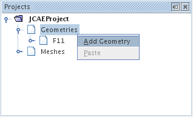
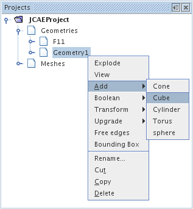
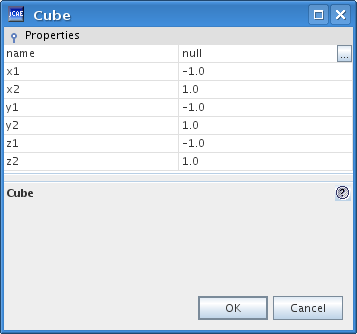
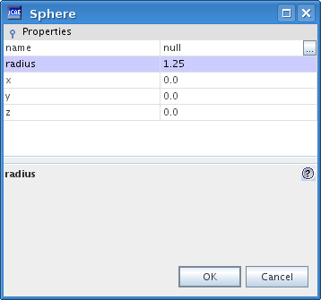
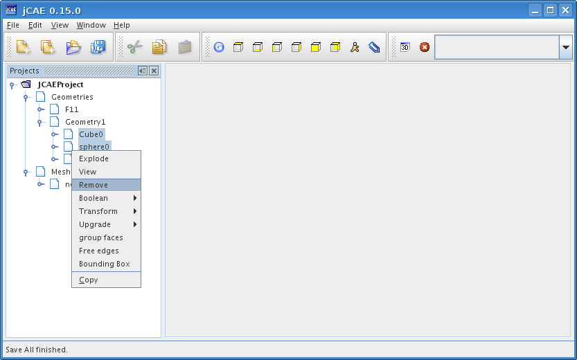
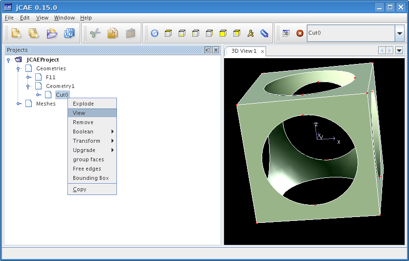
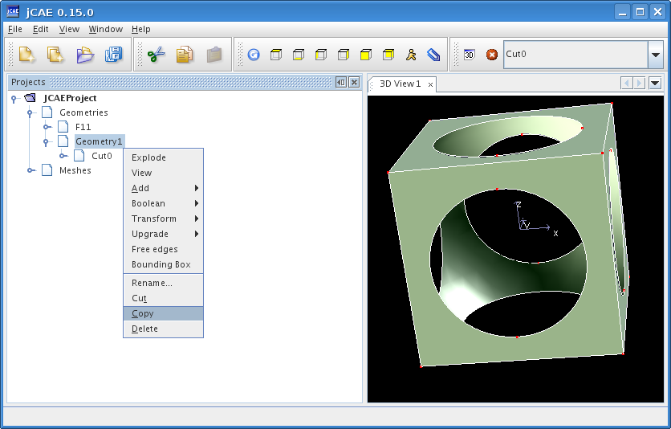
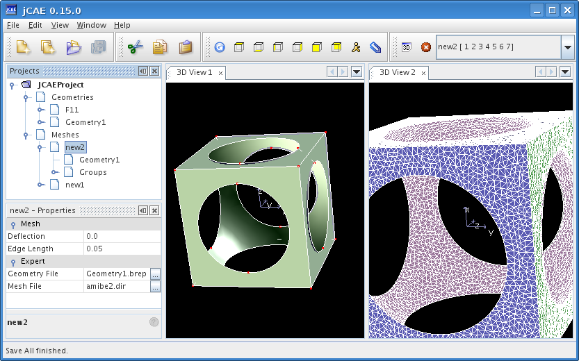

Once unzipped the jCAE installation look like this:

To start jCAE on Microsoft Windows double click on the jcae.bat
file in the root directory of jCAE. On Linux run the jcae.sh
script. You get the following screen:

One has to start a new jCAE project, through the File|New Project menu. You get a wizard project in which you have to mention project name and storage location as presented in next figures.

Select name and location of the project:

Then click on Finish button. Basic structure of a project is generated in the upper leftmost tree. A project is composed of two basic modules: CAD module and meshing module.
First, one has to import a CAD file in the CAD module by selecting Import geometry in File menu. 3 CAD formats are supported: native OpenCascade format (Brep) and standard IGES and STEP formats. Select a CAD file:

A new CAD object is created. To display this geometry, right click on it and click View.

This terminates the CAD operations. We now create a new mesh, then link the previously loaded geometry to the mesh object. Currently, this is done through the copy/paste operation presented hereafter.
|
|
|
Then you may modify meshing parameters (edge length and deflexion) through the lower leftmost properties panel as shown below.

Once parameter values are set, you can compute mesh through the pop-up menu as shown below.

One can follow the mesh generation phase by displaying output window (from window menu)

Once mesh is generated, View operation (pop-up menu) can be selected to get its 3D representation.

Creation of a new geometry.
Pop-up menu for basic object creation.
Create a cube and a sphere with following proporties.
| Cube properties panel | Sphere properties panel |
|---|---|
|  |  |
Select cube node, hold down Shift key and select sphere node, then select Boolean/Cut operation
Remove sphere and cube shapes so that only cut shape remains in geometry node.
Geometry should look like this.
Copy geometry node (not the cut node, this one is a single shape of the geometry node and cannot be copied into mesh nodes!), paste it into a new mesh node and process as before.

Final 3D view of the mesh.
A user kindly reported problems with his configuration due to memory limitations, and explained (in French) how to fix it. The mesher is launched into a separate JVM, and default maximum memory is set to 1500MB. The reason is that jCAE is primarily designed to work with very large meshes for finite element applications, and it is quite logical to have lots of RAM. We checked on Linux systems that computers with less RAM (1GB) are not affected by these settings, but it seems that Windows refuses to launch a JVM in these conditions. If you see messages like
Error occurred during initialization of VM Could not reserve enough space for object heap Could not create the Java virtual machine.
on your console, you need to modify maximumMemory property in Window/Options/Mesher settings tab.